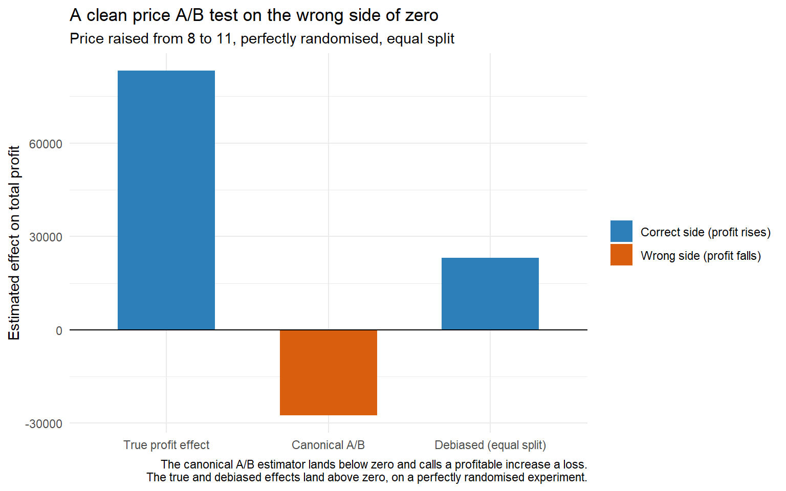

flowchart TD
P["A price experiment"] --> A["Market interference<br/>the arms compete"]
P --> B["Forward-looking demand<br/>buyers anticipate discounts"]
P --> C["Lead-day bias<br/>expirable goods"]
P --> D["The design trade-off<br/>estimate, earn, survive"]
A --> A2["Wrong-sign profit estimator<br/>Part II, Johari, Page, Weintraub (2026)"]
B --> B2["Two price points cannot recover the gradient<br/>Part III, Wu et al. (2024)"]
C --> C2["Short-run result reverses the long-run<br/>Part IV, Le and Deng (2023)"]
D --> D2["Three objectives compete at once<br/>Part V, Simchi-Levi and Wang (2023)"]
Causal Price Experiments: When A/B Testing Isn’t Enough
pricing
experimentation
causal inference
revenue management
A practitioner’s walkthrough of price experiments: why a price is not a feature, the wrong-sign problem where a clean A/B test can tell you to raise a price you should cut, forward-looking demand and why two price points cannot recover the gradient, lead-day bias in marketplaces of expirable goods, designing an experiment that balances elasticity, revenue and tail risk, the causal-inference foundations, and a full R simulation of the wrong sign with its debiasing.
A/B testing is the gold standard of experimentation, and most teams test a price the same way they test a feature. They split the units, apply the new price to one arm and the old price to the other, compare the outcome, and follow the result. That procedure is correct for a feature, and it can fail for a price, because a price is not a feature. Stated in general form, the claim of this post is simple: the canonical A/B estimator, applied to a price, can point in the wrong direction. An A/B test on a feature tells you whether to ship it. An A/B test on a price can tell you to raise it when you should have cut it.
The reason is structural. A feature’s effect stays inside the treated unit, while a price’s effect spreads through the market. Johari, Page, and Weintraub (2026), modelling A/B price experiments structurally, prove that the canonical estimator for the expected change in profit can have the wrong sign in expectation. Following its guidance can lead a firm to move prices in the wrong direction, inadvertently decreasing profit, raising a fee it should have cut. They show that the change-of-sign regime depends on market factors such as the supply-demand imbalance and the price markup. Calibrating their revenue-management model to published empirical estimates from Airbnb marketplaces, they find that wrong-sign estimators are not a knife-edge case. Every market in their study was susceptible under the listing-side randomisation that firms typically use, prevalent enough to concern practitioners.
This post is about measuring the causal effect of a price with an experiment, and about the four ways a clean experiment still fails. Part I establishes why a price is not a feature. Part II develops the central failure, market interference and the wrong-sign estimator. Part III covers forward-looking demand and intertemporal interference. Part IV covers lead-day bias in marketplaces of expirable goods. Part V covers designing a price experiment that survives all three, and the trade-off among estimating elasticity, earning revenue during the test, and controlling tail risk. Part VI is the causal-inference view, including why observational demand estimation fails and what randomisation does and does not buy. Part VII is a full R implementation. Part VIII is the review checklist I run before I trust a price experiment. This is not an argument that A/B testing is broken in general, and it is not a claim that price experiments should be abandoned. A/B testing is the right tool for features, and price experiments are essential. The argument is narrower: a price experiment needs a different design and a different estimator than a feature experiment, because the price propagates in ways the feature does not.
Part I. Why a price is not a feature
I.1 A feature’s effect is confined, a price’s is not
When a team A/B tests a feature, the treated units get the feature and the control units do not. Under random assignment and the standard no-interference assumption, the difference in outcomes between the two arms estimates the causal effect. The effect of the feature on the treated unit is, to a close approximation, the whole story. One user seeing a new checkout button does not change whether another user converts, so treated and control outcomes stay independent, and the difference-in-means estimator is unbiased.
A price does not stay inside the treated unit. It propagates through at least three channels. It moves the market, because in a marketplace the treated units and the control units compete for the same buyers or the same supply, so pricing one arm differently changes the outcome of the other, which is interference. A buyer who would have booked a treated listing at the higher price instead books a cheaper control listing, so the control arm absorbs demand that belongs to the treatment arm, and the difference-in-means estimate no longer reflects a world where every unit carries the new price. It moves the future, because buyers who observe or anticipate a price change adjust when they buy, so a price today changes demand tomorrow. And it moves the competition, because rival sellers observe price changes and respond, so the effect measured during the test is not the effect that persists once rivals react.
Each of these three channels violates the no-interference assumption that makes the feature A/B test valid. The Switchback post in this series developed the market-interference channel for operations decisions such as dispatch and matching. Here all three channels operate at once, and they operate because the intervention is a price. The rest of this post works through what each channel does to the estimate and how to design around it. These are three of the four ways a price propagates. The fourth is specific to marketplaces of expirable goods, where a unit loses all value at a fixed moment and the earning-maximising price depends on how far ahead it is bought, and Part IV develops it as the lead-day channel.
I.2 The estimand is ambiguous in a way a feature’s is not
For a feature, the estimand is unambiguous. It is the average treatment effect of shipping the feature versus not shipping it. The decision is binary, ship or do not, and the ATE answers it directly, in the sense the ATE post in this series established: the estimand follows the decision, and here the decision and the estimand line up cleanly.
For a price, two distinct estimands compete, and teams routinely conflate them. The first is the average treatment effect of a specific pricing policy, the question of whether this price beats that price. The second is the demand gradient, the local elasticity of quantity with respect to price, which we write as the derivative \(\partial q / \partial p\) of quantity \(q\) with respect to price \(p\), and which is what a firm needs to optimise a price rather than to choose between two candidates. Throughout this post, price is \(p\), the base or control price is \(p_0\) and a treatment or alternative price is \(p_1\), demand is \(q = D(p)\), the demand gradient is \(D'(p) = \partial q / \partial p\), and profit is \(\pi(p)\) with gradient \(\pi'(p)\). Cooprider and Nassiri (2023), describing the pricing experimentation service at Amazon, state the distinction plainly: the purpose of their product-randomised experiments is to estimate the average treatment effect of a pricing policy to decide whether to launch it, and generally not to measure price elasticity. The two estimands need different experiments and different estimators.
A team that runs a two-price A/B test and reads the result as an elasticity has answered the wrong question, because two price points identify a policy contrast but not the local gradient \(\partial q / \partial p\) in general, a point Part III makes precise. A team that runs the same test to choose between two candidate prices has answered the right question, but only if the interference channels of Part II have not flipped the sign of the estimator. You have to choose the estimand before the experiment, and the design has to match it.
NotePolicy effect or demand gradient
A price experiment can target the average treatment effect of a pricing policy, the question of whether one price beats another, or it can target the demand gradient \(\partial q / \partial p\), the local elasticity needed to optimise the price. These are different estimands, and they require different designs. Cooprider and Nassiri report that Amazon’s pricing experiments target the policy ATE and generally not the elasticity, and conflating the two is a common and costly error.
I.3 The four failure modes
Four failure modes structure the rest of the post, and each is a specific way the no-interference assumption breaks when the intervention is a price.
First, market interference and the wrong sign. Because treated and control units compete in the same market, the canonical estimator for the expected change in profit can have the wrong sign in expectation. Part II develops this, following Johari, Page, and Weintraub (2026).
Second, forward-looking demand. Because buyers anticipate future prices, a price change today shifts when they buy, biasing the demand gradient, and no two-price experiment can recover the gradient correctly. Wu, Johari, Syrgkanis, and Weintraub (2024) prove that the gradient is unidentifiable from two price points alone, even in the limit of an infinitely long experiment. Part III develops this.
Third, lead-day bias. Because in marketplaces of expirable goods the earning-maximising price of a unit varies with how far in advance the unit is bought, the short-run experimental result can move in the opposite direction to the long-run impact. Part IV develops this, following Le and Deng (2023) at Airbnb.
Fourth, the design trade-off. Because a price experiment must estimate the effect, earn revenue while it runs, and avoid a catastrophic loss at the same time, the design is a trade-off among objectives that a feature experiment never faces. Part V develops this, following Simchi-Levi and Wang (2023).
| Failure mode | What breaks | The fix | Source | Part |
|---|---|---|---|---|
| Market interference | The canonical profit estimator can carry the wrong sign | Equal-split debiasing | Johari, Page, and Weintraub (2026) | II |
| Forward-looking demand | Two price points cannot identify the gradient | At least three price levels | Wu et al. (2024) | III |
| Lead-day bias | The short-run result can reverse the long-run impact | Condition on the lead-day composition | Le and Deng (2023) | IV |
| The design trade-off | Estimating, earning, and surviving compete | Choose a point on the frontier | Simchi-Levi and Wang (2023) | V |
Each failure mode is a specific breakdown of the no-interference assumption that the feature A/B test relies on. The Switchback post covered interference for operations decisions, and the Elasticity post covered identifying demand from observational data. This post covers identifying the causal effect of a price from an experiment, which is harder than either, because a clean randomisation is necessary but not sufficient.
The most counterintuitive of the four is the first, because it turns a clean, correctly randomised, adequately powered A/B test into a signal that can point the wrong way. Part II develops the market-interference channel and the wrong-sign result, shows which market factors, the supply-demand imbalance and the price markup, determine when the sign flips, and gives a debiasing technique that needs nothing more than an equal split between treatment and control.
Part II. The wrong-sign problem
Part I established that a price experiment carries interference because the treated and control units compete in the same market. Part II shows what that interference does to the estimate. The result, from Johari, Page, and Weintraub (2026), is stranger than a loss of precision or a modest bias. The canonical estimator for the expected change in profit can have the wrong sign in expectation. A clean A/B price test, correctly randomised and adequately powered, can tell a firm to raise a price it should have cut.
Here is the plan. We set up the canonical estimator and locate where the bias enters, we build the intuition for the wrong sign, we characterise the market conditions under which the sign flips, and we give the debiasing technique that corrects it.
II.1 The canonical estimator and where the bias enters
Start with the estimator itself. In a standard A/B price test, the firm splits units between a treatment arm at price \(p_1\) and a control arm at price \(p_0\), and estimates the effect of the price change as the difference in average outcome between the arms, scaled by the price difference. For quantity, this is the naive estimate of how much quantity moves when price moves, the demand gradient \(D'(p_0)\) from Part I. For profit, it is the naive estimate of how much profit moves, an estimate of \(\pi'(p_0)\). This is exactly the estimator a team would build for a feature, applied to a price. In the paper’s notation it is a difference-in-means, or Horvitz-Thompson, estimator.
The estimator is unbiased under the same no-interference assumption that validates a feature A/B test. The outcome of a unit in the treatment arm must not depend on the treatment assigned to units in the control arm. For a feature, that holds to a good approximation, because the treated user’s experience is self-contained. For a price in a market, it fails. The treatment and control units are not isolated. They compete for the same buyers on the demand side, or the same capacity on the supply side, so the price set in the treatment arm changes the outcomes realised in the control arm.
Johari, Page, and Weintraub (2026) model the market structurally and use differential calculus to characterise the bias. Their central result is clean: the bias equals the cross-effects between the arms, the sensitivity of each group’s outcome to a marginal change in the other group’s price. Those cross-partial derivatives are precisely the signature of interference. The naive difference conflates two things. The first is the direct effect of the price change on the treated units, which is what the firm wants. The second is the interference effect of the treated units’ prices on the control units’ outcomes, which contaminates the comparison. When the interference effect grows large enough relative to the direct effect, it does not merely shrink or inflate the estimate. It can reverse it.
II.2 The intuition for the wrong sign
Consider a marketplace where buyers choose among units, the treated units raise their price, and the control units hold theirs. Some buyers who would have taken a treated unit now switch to a control unit, because the control unit has become relatively cheaper. The control arm’s quantity rises. It rises not because the control price changed, it did not, but because the treatment price rose. The paper calls this cannibalisation of treatment purchases by their control counterparts. The naive estimator then compares the treated arm’s depressed quantity to the control arm’s inflated quantity, and overstates how much the price increase cut quantity.
Now trace that through to profit. The profit estimate depends on both the quantity change and the margin. When interference inflates the control arm’s quantity, the naive comparison can make a price increase that actually raised total profit look like it lowered profit. Johari, Page, and Weintraub (2026) make the direction precise. Suppose treatment raises the price and the true global effect on profit is positive, meaning the firm was underpricing. The estimator can still come out negative in expectation, instructing the firm to cut a price it should raise. Under identifiable conditions the estimator’s expectation carries the opposite sign to the true effect, so a firm that follows it optimises in reverse.
This is the same interference the Switchback post in this series developed for marketplace operations, where a user-level A/B test on a dispatch or matching change is contaminated because the treated arm consumes supply the control arm depended on. Here the intervention is a price and the contamination runs through substitution between the arms, but the structure is identical. The randomisation is clean, and the estimator is still biased, because the units are not independent. The paper notes the same distinction we drew in the Switchback post: bias does not vanish with sample size, while variance does, so this is not a problem more data solves.
II.3 The change-of-sign regime
Johari, Page, and Weintraub (2026) specialise their general model to the standard revenue-management pricing problem and then to a two-sided market model, and they characterise the change-of-sign regime in terms of market factors. Two factors dominate. The first is the supply-demand imbalance, how tight the market is and how hard the two arms compete for a constrained resource, governed in the two-sided model by the ratio of arrival rate to supply. The second is the price markup, how far the price sits above marginal cost. The sign of the canonical profit estimator relative to the true effect depends on where the market sits along these two dimensions. Formally, a sign flip requires two conditions to hold together: the firm is underpricing relative to the profit-maximising price, and the interference bias is at least as large as the true marginal-profit effect.
The practical reading is uncomfortable. The wrong-sign regime is not an exotic corner of the parameter space. Johari, Page, and Weintraub (2026) prove that for any level of market balance there exists an interval of prices on which the canonical estimator carries the wrong sign, and the upper edge of that interval sits exactly at the profit-maximising price. A firm pricing at or slightly below its optimum sits inside the flip region. You cannot assume you are outside the wrong-sign regime without checking, because the conditions that produce the flip, tight supply and a price near the optimum, are the conditions under which pricing decisions matter most.
An honest caveat belongs here. The precise boundary of the change-of-sign regime depends on the structural model’s assumptions, and the authors are explicit that their characterisation is derived within that model, chiefly a logit demand system with imperfect substitution between the arms. The lesson for you is not a formula for the boundary but a warning. In a market with meaningful competition between the arms, the sign of the canonical A/B profit estimator cannot be trusted without a correction, because the market conditions that flip it are common rather than rare.
WarningThe flip region sits at the optimum
The wrong-sign regime is not a remote corner of the parameter space. Johari, Page, and Weintraub (2026) prove that for any level of market balance there is an interval of prices on which the canonical estimator carries the wrong sign, and the upper edge of that interval sits exactly at the profit-maximising price. A firm pricing at or just below its optimum, which is where a careful firm tries to sit, is inside the flip region. The two conditions that produce the flip, tight supply and a price near the optimum, are the conditions under which a pricing decision carries the most money.
II.4 The debiasing technique and the Airbnb calibration
The correction is notable for how little it demands. Johari, Page, and Weintraub (2026) introduce a debiasing technique for the canonical estimator that requires only that the firm split units equally between treatment and control, one half of the units to each arm. Under the equal split, a symmetry appears in the structure of the interference bias, and that symmetry lets the bias be written in terms of observable control-side quantities and removed. The output is an estimator whose sign, and magnitude, can be trusted. The practical appeal is that the equal split is already the default in most A/B tests, so the correction changes the analysis rather than the experiment. Two honest limitations attach. The method uses only the control half of the sample, so it sacrifices some efficiency, and it relies on the pre-experiment demand at the control price being a reasonable proxy, which assumes the market stays roughly stationary during the test.
To show the wrong-sign problem is a real concern and not a theoretical curiosity, Johari, Page, and Weintraub (2026) calibrate their revenue-management model to published empirical estimates from Airbnb markets, drawing costs and own-price elasticities from Farronato and Fradkin (2022) across four market segments in ten US cities. The calibration finds that estimators with the wrong sign are not a knife-edge issue, meaning they do not require a precise and unlikely coincidence of parameters. In the case study, every market examined showed susceptibility to the wrong sign under listing-side randomisation, the design most firms actually use for price tests. When a listing is even mildly underpriced and the cross-price elasticity between the arms is comparable in magnitude to the own-price elasticity, the flip arises. The wrong-sign regime, under realistic marketplace parameters, is reachable.
In my own work I do not accept the naive difference in profit between the arms of a price experiment as the answer, in any market where the arms compete. I check whether the market plausibly sits in the wrong-sign regime, tight supply and a price near the optimum, and I apply the equal-split debiasing before reading the sign, let alone the magnitude. The cost of the correction is one analytical step. The cost of skipping it is optimising the price in reverse.
The wrong-sign problem is interference across the arms within a single period. A price also interferes across time, because buyers who anticipate a future price change decide when to buy, and that anticipation contaminates the very gradient a price test is meant to recover. Part III develops this forward-looking demand, shows how it biases the demand gradient, and proves the sharper result that no two-price experiment can recover the gradient correctly, no matter how long it runs.
Part III. Forward-looking demand and intertemporal interference
Part II covered interference across the arms of an experiment within a single period. The treated arm’s price contaminated the control arm’s observed quantity at the same moment, and that contamination was strong enough to reverse the sign of the canonical profit estimator. Part III moves the interference into a different direction. It runs across time. The mechanism is strategic buyers who look ahead. When a seller runs a price experiment that includes discounted periods, buyers who observe or anticipate those discounts change when they buy. A buyer who expects a lower price next week does not buy at the reference price this week. The experiment’s own discounts reshape the demand it was built to measure.
Here is the plan for Part III. We set up the switchback price experiment with forward-looking buyers, explain the intertemporal interference and the bias it creates, state the two-price impossibility result, and give the three-price fix.
III.1 The switchback price experiment and forward-looking demand
Wu, Johari, Syrgkanis, and Weintraub (2024) study a retailer running a switchback experiment for the price of a single product with effectively infinite supply. In each period the seller posts a price from a small predefined set, made up of a reference price and one or more discounted levels. The goal is to estimate the demand gradient at the reference price, so that the seller can adjust the reference price to improve revenue once the experiment ends. This is the demand-gradient estimand of Part I, now pursued through a switchback design rather than a cross-sectional A/B test. It connects to the Switchback post in this series, where we treated temporal switching as a way to handle interference over time. Write \(D(p)\) for the average static demand, the mass of buyers who would purchase at a permanently fixed price \(p\). The estimand is the gradient
\[D'(p_0) = \frac{\partial q}{\partial p}\bigg|_{p = p_0},\]
the derivative of that demand with respect to price at the reference price \(p_0\).
In each period a unit mass of buyers arrives, with values drawn from a time-varying process. The feature that changes everything is that buyers are forward-looking. They have a discounted utility and will choose not to purchase now if they expect a discounted price in the near future. A buyer is not a passive draw from a fixed demand curve. The buyer reasons about the seller’s future prices and times the purchase accordingly. Wu, Johari, Syrgkanis, and Weintraub (2024) point out that the same price-tracking tools that reveal a running experiment to an analyst also let customers form expectations and strategise about when to buy.
A naive gradient estimator treats each period’s observed quantity as the demand response to that period’s posted price, as if buyers were myopic. Under forward-looking demand this is wrong. The quantity in a reference-price period reflects not only that price but the discounts buyers expect in nearby periods. The discount schedule leaks into the reference-price periods through anticipation, and the naive estimator attributes to the reference price a quantity that the discounts helped shape.
III.2 The intertemporal interference and its bias
The intertemporal interference is that the price posted in one period affects the quantity realised in other periods, working through buyers’ anticipation. This is the temporal analogue of the cross-arm interference of Part II. There the treated arm’s price contaminated the control arm’s quantity within the same period. Here the discounted periods contaminate the reference-price periods across time, because a buyer who sees a discount coming shifts the purchase out of the reference period and into the discount period.
Wu, Johari, Syrgkanis, and Weintraub (2024) characterise the form of that bias. The reference-price periods lose the buyers who wait for the discount, so the observed reference-price quantity understates the true myopic demand at the reference price. The discount periods gain those same buyers, so the observed discount quantity overstates the true response to the discount. The naive gradient is computed from the difference between the two quantities, and both quantities are distorted by the same anticipation in opposite directions. Wu, Johari, Syrgkanis, and Weintraub (2024) decompose the distortion into two parts. The reference-price periods underestimate demand at the reference price, and the discount periods overestimate the response to the discount, because they absorb buyers who arrived earlier and waited. Combined, these two parts give a resulting estimator that equals the true gradient multiplied by a factor greater than one, so it overstates price sensitivity. The factor depends on the buyers’ patience and the discount probability, and it grows as buyers become more patient.
The bias does not vanish as the experiment runs longer. More periods give more data, but every reference period is still contaminated by the discounts around it, and every discount period still absorbs buyers who waited. The contamination is structural, built into forward-looking behaviour, so a longer experiment estimates the biased quantity more precisely rather than converging to the truth.
III.3 The two-price impossibility result
Wu, Johari, Syrgkanis, and Weintraub (2024) prove a sharp impossibility. No estimator that uses data from a price experiment with only two price points can recover the correct demand gradient. The result holds even in the limit of an infinitely long experiment with an infinitesimal price discount. Two price levels, the reference price and a single discount, do not carry enough information to separate the true gradient from the intertemporal interference, no matter how much data is collected or how small the discount is.
We can see why with a counting argument. Two price points give the seller one contrast, the difference between the reference quantity and the discount quantity. That single contrast confounds two unknowns: the true demand gradient, and the strength of the forward-looking substitution the discount induces. One equation cannot solve for two unknowns. The infinitesimal-discount limit does not rescue the design, because shrinking the discount shrinks the signal and the interference together and leaves the confound intact. The paper makes the same point through the data. A high rate of delayed purchases is consistent with buyers who are very price sensitive and impatient, and equally consistent with buyers who are barely price sensitive but very patient. Two-price data cannot tell these two worlds apart.
This is stronger than a bias that a larger sample or a smaller treatment would shrink. It is an identification impossibility. The two-price design does not contain the information needed to recover the gradient, so no analysis of two-price data, however sophisticated, can succeed. The standard practice of testing a reference price against a single discount looks like a clean two-arm experiment. Under forward-looking demand it cannot answer the question it was run to answer.
III.4 The three-price fix
Wu, Johari, Syrgkanis, and Weintraub (2024) show that a simple three-price-level experiment removes the bias. With a reference price and two distinct discount levels, the seller has two contrasts rather than one, and the second contrast supplies the extra information needed to separate the true demand gradient from the forward-looking substitution. Using the three-price data, the seller can build an estimator that asymptotically recovers the true gradient and removes the bias from strategic behaviour. The estimator takes the form of a difference of differences. It starts from one gradient estimate and corrects it by the gap between two gradient estimates measured at different discount levels, a gap that can only arise from anticipation.
Two unknowns need two independent contrasts to identify. Three price levels supply exactly that. The reference against the first discount and the reference against the second differ in how much anticipation they induce, because a buyer facing the full reference price has more room to wait than a buyer already offered the first discount. The difference between the two contrasts isolates the substitution from the gradient. The third price level is not a refinement of the two-price design. It is the minimum design that makes the gradient identifiable at all under forward-looking demand.
In my work, when demand is plausibly forward-looking, which is the case for any durable or postponable purchase, I do not run a two-price switchback and read the gradient off it. Part III’s result says that number is not identified. I run at least three price levels and accept the extra experimental cost, because that cost buys the difference between an estimate that converges to the truth and one that converges to a biased quantity. The connection to the series is direct. The Switchback post established that the randomisation unit is a design decision. Here the count of price levels is a design decision too, and it carries an identification consequence. If you are planning a price experiment and you expect buyers to anticipate your discounts, choose three levels before you collect a single day of data, because no later analysis can repair a two-level design.
The wrong-sign problem is interference across the arms. Forward-looking demand is interference across time. A third failure appears specifically in marketplaces of expirable goods, where the value of the good depends on how far in advance it is bought. Part IV develops lead-day bias, and the result that the short-run experimental outcome can move in the opposite direction to the long-run impact.
Part IV. Lead-day bias in marketplaces of expirable goods
Part II covered interference across the arms. Part III covered interference across time through buyer anticipation. Part IV covers a failure that belongs to a class of markets rather than to a mechanism of demand: marketplaces of expirable goods. An expirable good loses all value at a fixed moment. A hotel night not sold by the night of stay is worth nothing afterward. An airline seat not sold by departure is worth nothing. Le and Deng (2023), working on Airbnb’s pricing guidance tools, show that in such markets a naive A/B test comparing two pricing strategies carries a systematic bias tied to the lead-day, the number of days between now and the night of stay.
Here is the plan. We set up expirable goods and the lead-day, explain the bias mechanism, state the sign reversal and the slow convergence and separate it from the novelty effect, and give the correction and the generalisation to other expirable-goods markets.
IV.1 Expirable goods and the lead-day
Le and Deng (2023) describe Airbnb’s pricing guidance tools, which help hosts set an earning-maximising price for each night of stay. Airbnb does not control nightly prices, so these tools recommend prices rather than impose them. The fact that drives everything here is that the earning-maximising price for a given night varies with the lead-day. A night ninety days away and the same night three days away carry different optimal prices, because the pool of potential guests, their willingness to pay, and the probability of a later booking all shift with how far in advance the booking is made. The recommendation models are, in the authors’ words, heavily lead-day dependent, updating suggestions daily as inventory and proximity change.
This makes the outcome a moving target. A booking for a given night can arrive at any lead-day before that night. Airbnb describes a booking cycle running from roughly \(120\) days ahead down to same-day booking. As the night approaches, the same inventory is offered at successively shorter lead-days, and the optimal price changes at each. A pricing strategy is therefore not evaluated at a single price. It is evaluated across a trajectory of lead-days, and its performance depends on how it prices at each point along that trajectory.
That creates a specific experimental problem. When a marketplace runs an A/B test comparing two pricing strategies, the bookings observed at any moment are a mixture of bookings made at many different lead-days for many different future nights. The mixture changes over the life of the experiment. Early on the observed bookings are dominated by short-lead-day purchases for near-term nights, while the long-lead-day bookings for distant nights have not yet resolved. The experiment measures a mixture whose composition shifts over time, and that shifting composition is the source of the bias.
IV.2 The bias mechanism
Le and Deng (2023) formalise the lead-day bias. At the start of an experiment, the bookings that resolve first sit at short lead-days. A night three days away is booked within the experiment’s first days. A night ninety days away will not resolve for months. If the two pricing strategies differ in how they price across lead-days, the early experimental result is governed by the short-lead-day segment, where one strategy can behave very differently from how it behaves at long lead-days. The authors decompose the problem further into a mixed-treatment effect, from near-term nights being priced under two models in sequence, and a fill-rate bias, from crediting revenue on the booking date rather than at the night’s expiration. Both operate through the lead-day.
The consequence for the measured metric follows directly. Revenue aggregated from the start of the experiment to the current date is weighted toward short-lead-day bookings early on, and only gradually absorbs the long-lead-day bookings as future nights resolve. Le and Deng (2023) show the metric often trends strongly in one direction, positive or negative, before changing course and stabilising, but only after months of running. The early trend is not the true effect. It is the short-lead-day segment’s effect, standing in for the whole.
This is a composition bias rather than a noise problem. The experiment is not imprecise. It is measuring a quantity whose composition changes over time, so the estimate at any early date reflects the lead-day mix that has resolved so far, not the long-run effect. Waiting longer moves the composition toward the truth, which is why the metric converges eventually. The convergence is slow because it is gated by the longest lead-days in the booking window, and at Airbnb that window runs out to roughly \(120\) days.
IV.3 The sign reversal, and why it is not the novelty effect
The most consequential form of the bias is that the short-run experimental result can move in the opposite direction to the long-run impact. A strategy that wins in the long run can look inferior in the first weeks, because its advantage is concentrated in long-lead-day bookings that have not yet resolved, while its short-lead-day performance, which resolves first, is worse. In the authors’ real Smart Pricing experiment the treatment set prices about \(2\%\) higher for long lead-days and dropped them aggressively as check-in approached, so early bookers sold slower and revenue only caught up near the stay. A team that stops the experiment early, or reads the early trend as the answer, reaches the opposite of the correct decision, and Le and Deng (2023) tie that error directly to suboptimal pricing and customer dissatisfaction.
Le and Deng (2023) are careful to separate lead-day bias from the classic novelty effect. In the novelty effect, users react to a new user-facing interface, and the reaction fades as the novelty wears off. Lead-day bias works differently. Most of the pricing changes happen in the backend, in the prices recommended to hosts, with virtually no interruption to the user-facing experience. There is no novelty for users to react to. The trend and its eventual reversal come from the resolution of bookings across lead-days, not from users adapting to a new interface.
The distinction matters because the two problems have different fixes. The novelty effect is addressed by running longer until the novelty fades, and the fade is a property of user psychology. Lead-day bias is addressed by accounting for the lead-day composition explicitly, and the convergence is a property of the booking window. Treating lead-day bias as a novelty effect, and simply waiting, does work eventually. It also wastes months, which is the exact cost the correction is built to avoid.
IV.4 The correction and the generalisation
Le and Deng (2023) propose an experimentation approach that corrects for the lead-day bias, limits the possible negative impact of experimenting, and accelerates the research and development cycle. Rather than waiting for the full booking window to resolve, which can take four months in their setting, the correction accounts for the lead-day composition of the resolved bookings so that the estimate at any date reflects the long-run effect rather than the short-lead-day segment resolved so far. In principle, the method reweights the observed revenue lift by lead-day \(j\), using weights drawn from the control policy’s historical booking pace, and models the lift as a function of lead-day so the segments not yet resolved can be projected from those already observed. The estimate is therefore not dominated by whatever resolved first. Alongside this reweighting, the authors restrict roll-out and analysis to nights far enough ahead to see a full booking cycle, and stack overlapping experiments on non-overlapping sets of nights to recover the throughput that limited roll-out would otherwise cost.
The bias is not specific to Airbnb or to lodging. It is a property of any marketplace of expirable goods, where the good loses value at a fixed moment and can be bought at varying lead times. Le and Deng (2023) note the same bias is likely present in vacation nights, car rentals, airline tickets, concert passes, and ride-hailing. Any pricing experiment you run in these markets that ignores the lead-day composition is exposed to the same sign-reversal risk. This failure mode applies directly to the capacity-constrained, perishable-inventory businesses the Dynamic Pricing post in this series identified as the classical revenue-management setting.
In my own work, in any marketplace of expirable goods, I do not read a pricing experiment’s early trend as its result, and I do not compare two pricing strategies without accounting for the lead-day composition of the resolved bookings. The early trend can point the wrong way, and waiting for natural convergence costs months the correction can save. The lead-day is not a nuisance variable to average over. It is the axis along which the optimal price varies, and the experiment has to respect it.
The three failures so far, the wrong sign, forward-looking demand, and lead-day bias, each break a naive price experiment in a different way, and each has a fix. But the fixes compete for the same experiment. A price experiment has to estimate the effect, earn revenue while it runs, and avoid catastrophic loss, and these objectives trade off against one another. Part V develops the design that balances them, following Simchi-Levi and Wang (2023), together with the adaptive designs that let a firm stop early with valid inference.
Part V. Designing a price experiment that survives
Parts II through IV diagnosed three ways a naive price experiment fails, and each came with a fix. Cross-arm interference can reverse the sign, and equal-split debiasing recovers it. No two-price experiment identifies the forward-looking gradient, and three prices do. The short-run result in a marketplace of expirable goods can move opposite to the long-run impact, and lead-day controls separate the two. None of these fixes is free, and they compete for the same experiment. A price experiment is unlike a feature experiment in a way Part I did not yet stress. It costs money to run. Setting a price away from the current best guess sacrifices revenue on every unit that receives the experimental price, so the experiment spends real money to buy information.
The design of a price experiment is therefore a trade-off, not a power calculation with a revenue footnote. In this part we set out the three competing objectives, develop the trade-off and the optimal design, cover the adaptive designs that let a firm stop early with valid inference, and cover the production choices that control demand trends and spillovers.
V.1 Three competing objectives
Simchi-Levi and Wang (2023) identify three fundamental objectives when designing a pricing experiment, and their central point is that the three compete. The first is estimating the causal effect of price, the elasticity, which in their linear structural model is the coefficient \(b\) on price in the demand function. This is the long-run value of the experiment, because a precise elasticity informs every future pricing decision: a permanent price, a promotion, a response to an inventory backlog, even the design of the next product. The second objective is maximising the expected revenue collected during the experiment, the in-experiment performance, measured as expected regret against a clairvoyant policy. This matters because the experiment runs on live customers, and every experimental price far from optimal costs revenue now. The third is controlling tail risk, the probability that the realised loss over the horizon is very large, which matters most when the experiment can be run only once.
The three objectives pull the design in different directions. Estimating \(b\) precisely wants prices spread widely around the current price, because a wide spread gives a strong signal about how quantity responds to price. Maximising in-experiment revenue wants prices close to the current best guess, because every deviation is a loss booked immediately. Controlling tail risk wants to avoid the extreme prices that a wide spread requires, because those extremes are what produce a catastrophic realised loss. Simchi-Levi and Wang (2023) make the first tension formal. For any admissible pricing policy and any estimator, the product of the estimator’s squared error and the expected regret is bounded below by a constant, so high accuracy and low regret cannot be achieved together. A design cannot maximise all three objectives at once.
The resolution is to stop treating the objectives as a menu and treat them as a frontier. Simchi-Levi and Wang (2023) work under a linear structural model and characterise the trade-offs explicitly, between causal inference and expected-revenue maximisation, and between expected-revenue maximisation and tail-risk control. The design question is not which objective to pursue but where on the frontier to sit, and that depends on the business context. A product with a long life ahead of it weights elasticity estimation heavily, because the long-run value dominates. A product with a short life or a thin margin weights in-experiment revenue and tail risk, because the cost of the experiment dominates its informational value.
V.2 The optimal design and the trade-off frontier
Simchi-Levi and Wang (2023) propose an optimal pricing experimental design, which they call Random Shock Design, that adapts flexibly to different desired levels of trade-off. Rather than fixing the price spread by rule, the design charges a greedy price that exploits current information and then adds an independent random shock \(\Delta_t\) of controlled size, tuned by a single parameter \(\alpha\). Increasing \(\alpha\) shrinks the shocks, which lowers expected regret but raises the estimator’s error, and lowering \(\alpha\) does the reverse. At \(\alpha = 0\) the design reduces to a randomised trial that estimates elasticity as fast as statistics allows and pays linear regret for it. A team that wants a precise elasticity accepts more in-experiment revenue loss and more tail risk. A team that wants to protect revenue accepts a noisier elasticity estimate. The same knob sets both.
The value of an explicit trade-off is that it makes the cost of learning visible. An experiment run purely for elasticity precision, with prices spread widely, carries a revenue cost and a tail-risk exposure that the team can now see and price in advance, rather than incur unknowingly. Simchi-Levi and Wang (2023) also use the optimal design to study the relationship between causal inference and tail-risk control directly. Under the linear model, the tail risk comes mainly from the uncertainty in estimating \(b\) rather than the estimation of the exogenous features, so the quality of the causal estimate is the bottleneck for bounding the worst-case loss. Sharpening the elasticity estimate and lightening the tail are, in their model, the same lever pulled from two ends.
In my work the first design question for a price experiment is not the sample size but the objective weighting. I ask how long the product will live, because that sets the value of the elasticity estimate. I ask what single-period loss the business can absorb, because that sets the tail-risk constraint. Only then does the price spread follow. A price experiment designed as if it were a feature experiment, spreading prices to maximise power without pricing the revenue cost, is a design that has quietly ignored two of its three objectives.
V.3 Adaptive designs and anytime-valid inference
A fixed design runs for a pre-set duration and is analysed once at the end. An adaptive design updates the allocation of units to prices as evidence accumulates, steering units away from prices that are clearly worse, which reduces the in-experiment revenue cost and the tail-risk exposure together. The natural framework is the multi-armed bandit, where each candidate price is an arm and the design learns which arm is best while it runs, balancing the learning it must do against the revenue that charging the current best price earns. The bandit is the machine that does what V.2 describes, moving along the frontier as data arrive rather than committing to one point in advance.
The difficulty with adaptive designs is inferential. Continuously monitoring the experiment and stopping when it looks decisive inflates the false-positive rate, the same peeking problem the NHST post in this series set out for fixed A/B tests. A p-value computed at a data-dependent stopping time does not control error the way a p-value computed at a fixed sample size does. Liang and Bojinov (2024) develop an experimental design for anytime-valid causal inference on multi-armed bandits, the Mixture Adaptive Design, which mixes any bandit algorithm with a Bernoulli assignment through a tuning sequence. The design produces a confidence sequence for the treatment effect that remains valid no matter when the experiment is stopped, for nearly any bandit algorithm, without requiring the assignment probabilities to be bounded away from zero and one. The result is that a firm can minimise regret, the revenue lost to trying prices that are not the current best, while retaining the ability to stop as soon as the evidence is decisive. If the true effect is non-zero, the confidence sequence excludes zero in finite time with probability one.
The three objectives of V.1 are all served by stopping early when the answer is clear. Less in-experiment revenue is lost, less tail-risk exposure accrues, and the elasticity estimate arrives sooner to inform the next decision. An anytime-valid bandit design is the tool that makes early stopping legitimate rather than a source of spurious significance. It connects the design trade-off of Simchi-Levi and Wang to the sequential testing the NHST post developed, and it is the design I reach for when the experiment runs on live prices and every extra day of a clearly worse arm is a real loss you can name.
V.4 Production design choices
The academic designs assume clean control of prices and units. A production pricing experimentation service has to handle constraints those models abstract away. Cooprider and Nassiri (2023), describing the pricing experimentation service at Amazon, set out the choices a real service makes. Because they do not price discriminate, showing different prices to different customers at the same time, they cannot randomise users. They run product-randomised experiments instead, assigning products into a treatment group priced by the new policy and a control group priced by the existing policy, and estimating the average treatment effect of the policy.
Cooprider and Nassiri (2023) distinguish two types of pricing experiment. Time-bound experiments treat products throughout the entire experimental period against a baseline period in which no product is treated. Trigger-based experiments apply the treatment only after a condition is met, for example a competitor putting the product on promotion, so only the subset of products that trigger enters the analysis. They increase precision through crossover designs, where products switch between treatment and control across two halves of the experiment with a blackout period between them to absorb carry-over effects. Every product then serves as its own counterfactual, which shrinks the standard errors materially. They also improve precision with an estimator that detrends each product against its pre-experiment trajectory and controls for pre-existing differences between the treatment groups. They reduce bias by improving the randomisation to prevent spillovers between related products, clustering substitutes and complements so that treatment does not leak into the control group. That leakage is the cross-arm interference of Part II, reappearing here in a product-randomised setting rather than a user-randomised one.
The production choices are how the three-objective trade-off and the failure-mode fixes are implemented under real constraints. Product randomisation is the response to the inability to price discriminate. Crossover designs and demand-trend controls are how in-experiment revenue is protected and precision is bought without widening the price spread further than necessary. Spillover-preventing cluster randomisation is how the wrong-sign interference of Part II is contained. A serious price experiment is the academic design of Simchi-Levi and Wang and of Liang and Bojinov, implemented with the production discipline Cooprider and Nassiri describe.
The design balances the objectives and the production choices implement it, but a designed experiment still rests on the causal-inference foundations the rest of this blog has built. Part VI places price experiments in that foundation. It sets out why observational demand estimation fails and what a century of instrumental-variables work established, what randomisation does and does not buy you, and how competition among sellers who all experiment can push prices in a direction no single experiment reveals.
Part VI. The causal-inference view
Parts II through V diagnosed failures and built designs around them. Part VI steps back to the foundation those designs rest on. A price experiment exists for one reason. The alternative, estimating demand from observational price and quantity data, fails, and it fails for a reason that is a century old and that the Elasticity post in this series developed at length. Price and quantity are jointly determined by supply and demand, so a regression of quantity on price traces neither curve. It recovers a blend of both, weighted by whatever happened to move in the sample. Randomisation is the modern answer to that old problem.
Understanding what randomisation solves, and what it leaves standing, is what places the whole post in context. This part covers four things: the historical identification problem, what randomisation buys, what it does not buy, and how competition among sellers who all experiment changes the meaning of any single experiment.
VI.1 The identification problem is a century old
Angrist and Krueger (2001) trace instrumental variables to its earliest application, and that application was estimating demand and supply. Economists in the early twentieth century, working with time-series data on products from herring to butter, wanted the elasticities of demand and supply. The obstacle was structural rather than statistical. Observed prices and quantities are equilibrium points where the two curves cross. As both curves shift over time, driven by weather, income, tastes, and cost, the data trace out a cloud of intersections rather than either curve on its own. An ordinary least squares regression of quantity on price identifies neither relationship. Put compactly, price is correlated with the demand shock \(\varepsilon\) in the equation you want to estimate, so the estimated slope is biased and the elasticity it implies is wrong.
The answer was to find a variable that shifts one curve without shifting the other. A supply shifter traces the demand curve. A demand shifter traces the supply curve. Wright (1928), in the seminal application, used weather-driven yield per acre as a supply shifter to recover the demand elasticity for flaxseed, averaging several such shifters to an estimate near \(-0.8\). Berry and Haile (2021), in their modern foundations of demand estimation, formalise the conditions under which demand is identified and extend the century-old logic to the differentiated products and rich choice models of contemporary markets. Their framing is blunt. Demand is not regression. The identification problem a pricing team faces today is the same one Wright faced, restated for modern data.
The Elasticity post developed exactly this. It showed why a naive regression returns the wrong elasticity and how instruments and related strategies recover it from observational data. A price experiment is a different answer to the same problem. Rather than searching for a naturally occurring supply shifter, the firm manufactures one by randomly changing the price itself. The experiment is an engineered instrument, and that is why it identifies the demand response that observational data cannot.
VI.2 What randomisation buys
Randomly assigning the price breaks the link between price and the unobserved demand determinants that confound observational estimates. In the language of VI.1, the randomised price is a shifter that moves along the demand curve without correlating with the demand shocks that shift it. This is what the observational approach lacks and must hunt for. The experiment supplies it by construction. Under clean randomisation the correlation between price and \(\varepsilon\) is zero by design, and the endogeneity that defeats a regression of quantity on price disappears. The demand gradient the firm wants, the local response of quantity to a change in price, becomes estimable from the assigned variation alone.
This is a real and large gain, and it is why price experiments earn their cost. The Berry and Haile (2021) conditions for identifying demand from observational data are demanding and often not credibly met, and the search for a valid supply shifter is the hard part of any observational demand study. A weak or invalid instrument quietly reintroduces the bias it was meant to remove. The experiment sidesteps that search. It needs no natural instrument, because the randomisation is the instrument, and its validity is a property of the design rather than an assumption about the world. For the endogeneity problem specifically, a clean price experiment is a complete solution.
VI.3 What randomisation does not buy
Randomisation solves endogeneity and nothing else. It does not touch the three failures of Parts II through IV, and that is the central lesson of this post restated in identification terms. A perfectly randomised price experiment can still produce a wrong-signed profit estimator, because the cross-arm interference of Part II is not an endogeneity problem. It can still fail to recover the demand gradient, because the forward-looking interference of Part III is not an endogeneity problem. It can still point the wrong way in the short run, because the lead-day composition bias of Part IV is not an endogeneity problem. Assignment is clean in each case, and each failure survives it intact.
The reason the distinction matters is what separates a price from a feature. The feature A/B test earns its reputation because, for a feature, randomisation is sufficient. It solves the only identification problem present, which is selection into treatment. For a price, randomisation solves that same selection problem and leaves three interference problems standing, because those problems do not come from how units are assigned to prices. They come from how a price propagates once assigned: across the arms of the experiment, across time as customers defer or accelerate purchases, and across the composition of who transacts when. A clean randomisation is necessary and not sufficient, and treating it as sufficient is the error that connects every failure in this post.
In my work I treat a clean randomisation as the entry requirement for a price experiment, not the finish line, because the three interference failures survive it and have to be handled by design and estimator. A team that stops at “the assignment was random, so the estimate is causal” has answered the endogeneity question and skipped the three that actually sink price experiments.
NoteA clean randomisation is necessary, not sufficient
Randomisation solves the endogeneity that defeats observational demand estimation, and that alone justifies the cost of running the experiment. It does not solve the interference of Part II, the forward-looking bias of Part III, or the lead-day bias of Part IV, because those failures come from how a price propagates rather than from how units are assigned. Treating a clean randomisation as sufficient is the single error that connects every failure in this post.
VI.4 Competitive experimentation
Every failure so far assumes a single seller experimenting on its own prices. Real markets have many sellers, and increasingly all of them experiment and price with algorithms. Light and Wang (2026) study competitive dynamic pricing among multiple sellers who each run local price experiments, such as switchback designs, observe their own realised demand and possibly a subset of rivals’ prices, and update a focal price using a linear demand estimate fitted to that data. No seller observes the full price vector or knows the true demand system. Each learns from the variation it can actually see, which sits somewhere between full price feedback and pure bandit feedback.
Under certain conditions on demand, Light and Wang (2026) show these dynamics converge to a Conjectural Variations equilibrium, a static equilibrium in which each seller best responds under a conjecture that rivals’ prices co-move with its own. The conjectures are not assumed as behavioural primitives, which is the usual criticism of the concept. They arise endogenously from the feedback structure and the correlation of experimentation across sellers. When a seller cannot observe some rivals’ prices, correlated experimentation induces an omitted-variable bias in its demand estimate, and that bias pins down the conjecture that governs the long-run equilibrium. The consequence that matters here is direct. When the learning bias vanishes, for example under full price feedback or independent experimentation, the dynamics converge to the standard Nash equilibrium. When it does not, the equilibrium can settle away from that benchmark. Light and Wang (2026) show that positively correlated experimentation with limited feedback induces positive conjectures that steer the market toward supra-competitive prices, not through explicit collusion but through the structure of what each seller infers from its own experiments. The direction is not always upward, because under some partial-feedback arrangements the induced conjectures turn negative and prices settle below the Nash benchmark. The general point holds either way. Competitive learning moves the equilibrium away from the single-seller benchmark, in a direction the feedback and correlation structure determine.
This is the competition channel named in Part I, developed in full here, and it operates at a level a single experiment cannot see. A seller’s price experiment measures the demand response holding rivals’ prices fixed, but rivals do not hold their prices fixed. They experiment and adapt in response. The effect a single experiment measures is therefore a partial-equilibrium quantity that will not persist once the competitive dynamics play out. The experiment is not wrong. It answers a narrower question than the seller usually assumes, and the gap between the measured effect and the equilibrium effect is the competition channel. This is the same distinction between a measured effect and an equilibrium effect that the Two-Sided Markets and Dynamic Pricing posts developed, now arising from competitive learning rather than from market clearing.
The identification view explains why a clean randomisation is necessary and not sufficient, and why the three interference failures survive it. Part VII makes one of those failures concrete. We run a simulation in R in which a perfectly randomised price A/B test, with no endogeneity whatsoever, still produces a profit estimator that points the wrong way, and we show that the equal-split debiasing of Part II recovers the correct sign.
Part VII. A simulation of the wrong sign
Part II made the most counterintuitive claim in this post. A price A/B test, randomised without flaw, can return a profit estimator with the wrong sign. Part VI explained why a clean randomisation does not prevent this. Randomisation removes endogeneity, not the interference between the arms. Part VII puts the claim on data you can regenerate. We build a capacity-constrained market where buyers choose between two arms of units. We assign one arm a control price and the other a higher treatment price, with perfect randomisation, so no endogeneity of any kind survives. We then compute the true profit effect of the price change, the canonical A/B estimator, and the debiased estimator, and we watch the canonical estimator point one way while the truth points the other.
The plan is short. We set up the market, simulate it in R, run the canonical estimator and read off the wrong sign, then apply the equal-split debiasing of Johari, Page, and Weintraub (2026) to recover the correct one. The true effect will come out positive, the canonical estimator negative, and the debiased estimator positive again.
VII.1 The market and the scenario
There is a fixed pool of buyers and a set of product units split into two arms, a treatment arm and a control arm. Each buyer has a private willingness to pay and takes the cheapest available unit priced below it, subject to a capacity constraint. Each arm holds fewer units than the demand that floods the cheaper arm, so the two arms compete for the same buyers. That competition is the whole mechanism. When the treatment arm raises its price, some buyers who would have taken a treatment unit take a cheaper control unit instead, and the control arm’s quantity swells. The swelling is interference, and it is the same cannibalisation we tracked earlier in the series, now moving demand from the treatment arm into control.
flowchart LR
B["Fixed pool of buyers"] --> T["Treatment arm<br/>price raised 8 to 11"]
B --> K["Control arm<br/>price held at 8"]
T -.->|"substitution flow"| K
T --> W["Treatment quantity falls"]
K --> S["Control quantity swells"]
W --> E["Canonical A/B compares the two arms"]
S --> E
E --> R["Reads a profitable increase as a loss"]
We set the demand and cost parameters so the firm is underpricing. The control price sits well below the profit-maximising price, so raising the price lifts whole-market profit even though volume falls, because the wider margin more than covers the buyers who leave. The correct decision is to raise the price. The open question is what the canonical estimator, computed from the experiment alone, tells the firm to do. The parameters sit inside the change-of-sign regime of Part II, set by the supply-demand imbalance and the markup, so the simulation earns the wrong sign rather than assuming it.
VII.2 Simulating the market in R
We represent 200,000 buyers with heterogeneous willingness to pay, 100,000 units split evenly between the two arms, and a capacity constraint that forces the arms to compete. The willingness-to-pay values are laid down on a fixed quantile grid, so the population is a deterministic representative sample and every number below is exactly reproducible. We run the market three ways. First the whole market at the control price, then the whole market at the treatment price. These two runs define the ground truth, the effect of moving every unit from the control price to the treatment price. Then we run the experiment itself, with the treatment arm dear and the control arm cheap.
The clearing rule is direct. Buyers take the cheapest affordable unit that still has capacity. When the treatment arm is dearer, every buyer prefers control, so control fills first, and only the residual high-value demand still willing at the treatment price reaches the treatment arm. The rest leave the market. When the two arms carry the same price they are identical, so they split demand by capacity share. That equal-price split is the no-change benchmark we return to in VII.4.
Code
set.seed(2026)
suppressPackageStartupMessages({
library(dplyr)
library(ggplot2)
})
n_buyers <- 200000 # fixed pool of buyers
rho <- 100000 # total units for sale, fewer than buyers
cap_c <- rho / 2 # control-arm capacity
cap_t <- rho / 2 # treatment-arm capacity
unit_cost <- 3
p_control <- 8 # control price
p_treat <- 11 # treatment price, a price increase
# Heterogeneous willingness to pay laid down on a fixed quantile grid: a
# deterministic representative population from an Exponential distribution
# with mean 10. Using the grid rather than a random draw makes every figure
# below exactly reproducible.
wtp <- qexp(ppoints(n_buyers), rate = 1 / 10)
# Market clearing. Buyers take the cheapest affordable unit that still has
# capacity. When treatment is dearer, control fills first and only the
# residual high-value demand reaches treatment. At equal prices the arms are
# identical and split demand by capacity share.
clear_market <- function(price_c, price_t, cap_c, cap_t, wtp, cost) {
if (price_c < price_t) {
demand_c <- sum(wtp >= price_c)
q_c <- min(cap_c, demand_c)
served <- q_c / demand_c
demand_t <- sum(wtp >= price_t)
residual <- demand_t * (1 - served) # high types not absorbed by control
q_t <- min(cap_t, residual)
} else {
demand <- sum(wtp >= price_c)
sold <- min(cap_c + cap_t, demand)
q_c <- sold * cap_c / (cap_c + cap_t)
q_t <- sold * cap_t / (cap_c + cap_t)
}
list(q_c = q_c, q_t = q_t,
profit_c = q_c * (price_c - cost),
profit_t = q_t * (price_t - cost))
}
# Ground truth: the whole market at control versus the whole market at treatment
q_all_control <- min(rho, sum(wtp >= p_control))
q_all_treat <- min(rho, sum(wtp >= p_treat))
profit_all_control <- q_all_control * (p_control - unit_cost)
profit_all_treat <- q_all_treat * (p_treat - unit_cost)
true_effect <- profit_all_treat - profit_all_control
true_effect[1] 83262The ground truth is now fixed. The true effect prints as about \(+83{,}262\), and it is positive. Raising the price from 8 to 11 lifts whole-market profit, because a control price of 8 sits far below the profit-maximising price of 13 for this demand. The firm is underpricing, and the correct decision is to raise the price, not to hold it.
VII.3 The canonical A/B estimator and the wrong sign
The canonical A/B profit estimator does what a feature test would do. It compares the treatment arm to the control arm inside the experiment and scales each arm, which holds half the units, up to the whole population. It never touches the no-change counterfactual, because a live experiment does not observe it. It uses only the two arms, exactly as a practitioner would read the dashboard.
Code
exp_run <- clear_market(p_control, p_treat, cap_c, cap_t, wtp, unit_cost)
# Each arm holds half the units, so scale each arm up to the full market.
profit_treat_scaled <- exp_run$profit_t / 0.5
profit_control_scaled <- exp_run$profit_c / 0.5
canonical_effect <- profit_treat_scaled - profit_control_scaled
canonical_effect[1] -27467.28The canonical estimate prints as about \(-27{,}467\), and it is negative, while the true effect from VII.2 was positive. The experiment, cleanly randomised with no endogeneity, tells the firm that the price increase cut profit, when the increase raised it. The treatment arm sold roughly 29,500 units against the control arm’s 50,000, so its scaled profit looks weak, and the naive reading blames the higher price. The real cause is the interference of Part II. The cheaper control arm filled first and absorbed buyers who, in a full rollout at the treatment price, would have bought treatment units. That lost treatment volume was cannibalised into control, not lost from the market, yet the canonical estimator books it as demand the higher price destroyed. A firm that follows the A/B estimate holds a price it should have raised and forgoes the profit.
The diagnosis fits on one line. The randomisation was clean, and the estimator was still wrong, because the arms competed.
VII.4 The debiased estimator and the recovered sign
Johari, Page, and Weintraub (2026) show that the canonical estimator can be debiased using only an equal split between treatment and control, which the simulation already runs. The correction accounts for the demand that substituted from the treatment arm into the control arm, so the control arm’s swollen quantity stops reading as evidence about the price. We implement the control-side of that equal-split correction as a finite difference. We measure the extra control quantity the experiment created against the no-change counterfactual, then remove the profit it wrongly contributes at the control margin. This is the principle of the equal-split correction applied to a discrete price change rather than the exact estimator in the source.
Code
# No-change counterfactual: both arms at the control price. This stands in for
# the pre-experiment demand at the control price, which is the status-quo price
# and therefore recoverable from historical data.
base_run <- clear_market(p_control, p_control, cap_c, cap_t, wtp, unit_cost)
# Substitution flow: the extra control demand the experiment manufactured
# relative to the no-change benchmark, scaled to the full market. This quantity
# is cannibalised treatment demand, not new demand.
control_demand_exp <- exp_run$q_c / 0.5
control_demand_base <- base_run$q_c / 0.5
substitution_flow <- control_demand_exp - control_demand_base
# Equal-split correction. The canonical estimator over-counts the control arm,
# because the equal split scales its capacity-bound, substitution-inflated
# quantity up to the whole market. We strip out the profit wrongly attributed
# to the substituted demand at the control margin. This is the control side of
# the equal-split correction in Johari, Page, and Weintraub (2026).
debias_correction <- (p_control - unit_cost) * substitution_flow
debiased_effect <- canonical_effect + debias_correction
results <- data.frame(
estimator = c("True profit effect",
"Canonical A/B",
"Debiased (equal split)"),
profit_effect = round(c(true_effect, canonical_effect, debiased_effect))
)
results estimator profit_effect
1 True profit effect 83262
2 Canonical A/B -27467
3 Debiased (equal split) 23203The debiased estimate prints as about \(+23{,}203\), on the same side as the truth, while the canonical estimate sat below zero. The correction used nothing beyond the experiment and the pre-experiment demand at the control price, only the equal split and an accounting of the substitution between the arms. It flipped the recommendation from hold to raise, which is the correct call. It recovers the sign but only about a quarter of the true magnitude, and the reason is honest rather than incidental. The correction removes the control arm’s substitution inflation, which is recoverable from control-side data. It does not reconstruct the treatment arm’s starved volume, the sales the higher price would have made in a full rollout, because that quantity is not identified from control-side data alone in this discrete rationing model. The sign returns because the control-side contamination is the part that flipped it, and the magnitude stays short because the treatment-side loss is left uncorrected. In the paper’s smooth model the equal-split symmetry recovers more of the level than this discrete toy does.
Code
plot_df <- results %>%
mutate(side = ifelse(profit_effect >= 0,
"Correct side (profit rises)",
"Wrong side (profit falls)"),
estimator = factor(estimator, levels = estimator))
ggplot(plot_df, aes(x = estimator, y = profit_effect, fill = side)) +
geom_col(width = 0.6) +
geom_hline(yintercept = 0, linewidth = 0.4) +
scale_fill_manual(values = c("Correct side (profit rises)" = "#2c7fb8",
"Wrong side (profit falls)" = "#d95f0e")) +
labs(
title = "A clean price A/B test on the wrong side of zero",
subtitle = "Price raised from 8 to 11, perfectly randomised, equal split",
x = NULL,
y = "Estimated effect on total profit",
fill = NULL,
caption = paste(
"The canonical A/B estimator lands below zero and calls a profitable",
"increase a loss.\nThe true and debiased effects land above zero, on a",
"perfectly randomised experiment.")
) +
theme_minimal()
The plot shows the split at a glance. The canonical bar drops below the zero line, on the wrong side, calling a profitable increase a loss. The true and debiased bars stand above the line, on the correct side, where the profit gradient actually points.
ImportantClean randomisation, wrong answer
The experiment was perfectly randomised, with no endogeneity of any kind. The canonical A/B profit estimator still pointed the wrong way, calling a profitable price increase a loss, because the treatment and control arms competed for the same buyers. The equal-split debiasing recovered the correct sign using only the experiment’s data and the pre-experiment demand at the control price. Randomisation is the entry requirement for a price experiment, not the finish line.
The simulation makes the wrong-sign failure concrete and shows the debiasing pulling the estimate back across zero on data you can regenerate line by line. Part VIII turns the whole post into the review checklist I run before I trust a price experiment, from whether the arms compete for the same buyers, to whether demand is forward-looking, to whether the result would survive competitors reacting once the new price ships.
Conclusion
A/B testing earned its status on features, where the treated unit is the whole story and a clean randomisation is enough to read the effect off the difference between the arms. A price is never the whole story. It moves the market, because the arms compete for the same buyers or the same supply, so the canonical estimator for the change in profit can carry the wrong sign in expectation and call a profitable increase a loss. It moves the future, because buyers who anticipate a discount decide when to buy, so two price points cannot recover the demand gradient no matter how long the experiment runs. It expires, in a marketplace of perishable inventory, because the earning-maximising price depends on the lead-day, so the composition of what resolves first can flip the short-run result against the long-run truth. It moves the competition, because rivals run their own experiments and adapt, so the effect measured in isolation need not survive once they react. In every case the assignment was clean and the estimate was still wrong. A clean randomisation is necessary and not sufficient, and the design and the estimator have to carry what randomisation leaves untouched.
In my work the first question about a price experiment is not the sample size but whether the arms compete, whether demand is forward-looking, and whether the good expires, because each answer changes the design and the estimator before a single unit is assigned. The experiments I have watched fail did not fail on randomisation. They were powered, balanced, and correctly assigned. They failed because a clean randomisation was treated as the finish line, and the interference it does not touch was left free to contaminate the estimate that reached the decision-maker. A firm that reads a textbook-clean dashboard and acts on the number is exposed precisely when its pricing decisions matter most, at tight supply and near the optimum. The most dangerous price experiment is not the underpowered one or the poorly randomised one. It is the one that is textbook-clean and still points the wrong way, because nothing on its face warns you.
An A/B test on a feature tells you whether to ship it — an A/B test on a price can tell you to raise it when you should have cut it. The next post in this series stays with the estimator, and asks what a price experiment can honestly report once the interference is priced into the answer.
References
Angrist, J. D., and Krueger, A. B. (2001). Instrumental Variables and the Search for Identification: From Supply and Demand to Natural Experiments. Journal of Economic Perspectives, 15(4), 69–85.
Berry, S. T., and Haile, P. A. (2021). Foundations of Demand Estimation. National Bureau of Economic Research WP 29305.
Cooprider, J., and Nassiri, S. (2023). Science of Experimentation at Amazon. American Economic Association Annual Meeting (AEA 2023).
Farronato, C., and Fradkin, A. (2022). The Welfare Effects of Peer Entry: The Case of Airbnb and the Accommodation Industry. American Economic Review, 112(6), 1782–1817.
Johari, R., Page, O. B., and Weintraub, G. Y. (2026). Price Experimentation and Interference. arXiv:2310.17165.
Le, T., and Deng, A. (2023). The Price is Right: Removing A/B Test Bias in a Marketplace of Expirable Goods. Proceedings of the 32nd ACM International Conference on Information and Knowledge Management (CIKM 2023).
Liang, B., and Bojinov, I. (2024). An Experimental Design for Anytime-Valid Causal Inference on Multi-Armed Bandits. Harvard Business School WP 24-057.
Light, B., and Wang, W. (2026). Conjectural Variations in Competitive Dynamic Pricing: A Learning Foundation via Experimentation Design and Feedback Structure. arXiv:2602.12888.
Simchi-Levi, D., and Wang, C. (2023). Pricing Experimental Design: Causal Effect, Expected Revenue and Tail Risk. Proceedings of the 40th International Conference on Machine Learning (ICML 2023), PMLR 202, 31788–31799.
Wright, P. G. (1928). The Tariff on Animal and Vegetable Oils. Macmillan.
Wu, Y., Johari, R., Syrgkanis, V., and Weintraub, G. Y. (2024). Switchback Price Experiments with Forward-Looking Demand. arXiv:2410.14904.